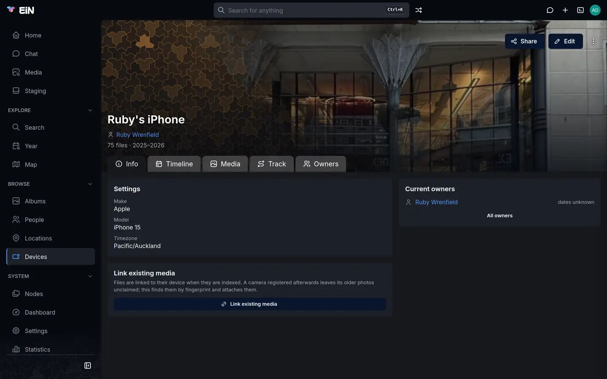

A device is a camera, phone, scanner, camcorder or GPS tracker that took pictures or recorded routes for your archive. This page is for family members and administrators who register devices, say who owned them, set their clocks right and bring in GPS tracks.
What registering a device gives you
EiN reads the camera's name out of every picture, but until the camera is registered as a device that is all it knows: the viewer shows the make and model the file names, and nothing else. Once a device is registered, the pictures it took are linked to it, and:
- the viewer's camera line names the device, links to its page and says who owned it (see The details panel);
- the device's page gathers everything it took, who owned it and when, and the route it recorded;
- an album's Info tab lists the devices that took its pictures (see Albums), and the Search page finds devices and narrows albums by them (see Search and the finder);
- the device's Timezone, Scanner or digitizer and Video times in UTC settings correct the dates of every picture it took;
- the GPS route it recorded, its track, is drawn on the maps.
How EiN recognises a device
When a file arrives, EiN reads what the camera wrote into it: the make (the EXIF tag Make), the
model (Model) and, when the camera writes one, its serial number (SerialNumber,
InternalSerialNumber or DeviceSerialNo). Some camcorders write the make and model as
DeviceManufacturer and DeviceModelName instead. These three together are the file's
fingerprint, and EiN looks for the registered device that has the same one:
- a device with the same serial number;
- otherwise, a device with the same make and the same model.
The device's name plays no part. The make and model are compared exactly as the camera writes
them, so a device registered with the make Nikon does not match files that say
NIKON CORPORATION.
EiN does this once, when it first reads the file. A device you register afterwards does not claim the files that arrived before it; Link existing media on its page finds them (see Link the pictures it took before it was registered).
Two things a fingerprint cannot do:
- Tell two phones of the same model apart. A serial number identifies one camera body; a make and model identify only a model line, and most phones write no serial number. If two people in the family have the same phone model, EiN cannot tell their pictures apart, and all of them are linked to one of the two devices.
- Match a file that names no camera. Many messaging apps remove the make and model from the pictures they send, and a file without them matches nothing. You can link such files by hand in the terminal (see From the terminal).
A device's fingerprint has nothing to do with the fingerprints EiN takes of the pictures themselves to find copies; those are described in Duplicates.
The Devices page
Open Devices in the sidebar, under Browse.

- The header counts the registered devices (13 devices). The filter box (Filter devices…) matches the name, make, model and serial number as you type.
- Show switches between Registered (N) and Unregistered, the cameras EiN has seen in the pictures that match no registered device.
- Sort offers Name (A-Z) (the default), Name (Z-A) and Make / model. Your choice is remembered in this browser. It has no effect on the unregistered list.
- Each card shows the device's cover, its name, its description or else its make and model, and badges: the serial number, the time zone, scanner and video UTC. Click a card to open the device's page.
When nothing is registered yet, the page says No devices registered yet: "The cameras and phones that took the pictures. Unregistered lists the ones the archive has already seen." with Show unregistered and, when you are signed in, New device.
Register a camera EiN has already seen
The quickest way to register a camera is from the pictures it took.
- On the Devices page, choose Show → Unregistered. The first time in a visit, EiN looks through the files it has read for cameras that match nothing registered. The list reads: "Cameras found in the indexed media that match nothing in the registry. Registering one lets its photos be linked to it, and its timezone and owners apply."
- Find the camera. Each card shows a suggested name (the model, with the make in front when the
model does not start with it, such as
Canon EOS 7DorPanasonic DMC-TZ1), the make and model, the serial number when there is one, and how many files it took (N files). The cameras with the most files come first. - Click Register on its card. The Register Device dialog opens with Name, Make, Model and Serial number filled in from the files.
- Change Name to what the family calls the camera, such as
David's 7D. Leave Make, Model and Serial number as they are: they are what the files are matched on. - Under Timezone, choose the time zone its clock was set to, and turn on Scanner or digitizer or Video times in UTC if they apply (see Clocks, time zones and scanners).
- Click Register. The device's page opens.
- On its Info tab, click Link existing media. The files the camera took are linked to it, and a message says, for example, "Linked 412 files and updated dates on 37."
Rescan at the top of the unregistered list looks again, for instance after a large import. When every camera is registered, the list says "Every camera the media names is registered (N files matched)." With many unknown cameras it shows the most used ones and says "Only the most-used cameras are listed; there are more."
When a card says "registered as …, but unmatchable"
Sometimes a device with the camera's name already exists, but without the make, model or serial number its files carry, so nothing is matched to it. Its card then has the badge registered as <name>, but unmatchable and the button Add fingerprint instead of Register, because registering would make a second copy of a camera EiN already knows.
Click Add fingerprint. EiN writes the make, model and serial number from the card into the existing device and links the files they identify. When it is done, a message says "Linked N files to <name>." or "<name> now carries the fingerprint, but no unclaimed files matched it." This is quick for a camera with a serial number and slow for one known only by its make and model, which can take minutes in a large archive.
The button is there only if you may change that device; otherwise the card has no button.
Register a device by hand
Register a device by hand when EiN has not seen it in any picture yet: a GPS tracker, a scanner before the scans arrive, or a camera whose files you are about to import.
- Open the Create menu (the plus in the top bar) and choose Device, or click New device on an empty Devices page. The Register Device dialog opens.
- Fill in the fields below. Only Name is required.
- Click Register. The device's page opens.
| Field | What to enter |
|---|---|
| Name | What the family calls it, such as Helen's scanner. The name also gives the device's folder in the tree, so two devices cannot have the same name. |
| Make | "As the camera writes it in exif: what files are matched on." For example Canon. |
| Model | "As the camera writes it in exif." For example Canon EOS 5D Mark III. |
| Serial number | "Tells one body apart, where make and model tell only the model." Optional. |
| Timezone | "The zone its clock was set to." Optional. |
| Scanner or digitizer | "Its EXIF device dates describe digitisation, not when the photograph was taken." |
| Video times in UTC | "Its videos keep their recording time in UTC, as phones do." |
To copy the make and model exactly, open a picture the camera took in the viewer and open
Details at the foot of the details panel. Among the EXIF tags it lists are Make, Model and,
when the camera writes one, SerialNumber (see The Details section).
A device without a serial number and without both a make and a model is never matched to any file.
Its page says so: "No serial and no make/model — nothing is matched to this device automatically;
device-link --device links files to it by hand."
Anyone signed in can register a device. Changing it afterwards, with the buttons this page describes, is offered to whoever may change it, which the device's Share dialog shows and sets (see Sharing).
A device's page
Click a card on the Devices page, or the device's name in the viewer. The page's address is
/devices/ and the device's folder name, such as /devices/Jons_eTrex, and a tab other than
Info adds ?tab= with the tab's name, such as ?tab=track.


Under the name, the header shows the current owners (up to three, then "and N more"), how many files the device took and in which years, such as 75 files · 2025–2026 (N+ files when counting stopped at its limit), and the device's labels. For those who may change the device, the corner has Share and Edit, and the ⋮ menu has Add event and Move to trash. On a phone they are all under ⋮.
| Tab | What it shows |
|---|---|
| Info | The page opens here. The Settings card lists Make, Model, Serial number, Timezone, "Capture dates: Scanner dates suppressed" for a scanner, "Video times: UTC", and the description; with nothing but a name it says "Nothing recorded beyond the name." Below it, Link existing media, and beside it Current owners with All owners. |
| Timeline | The device's history: when each owner started and stopped using it, the events written on it, and the albums holding pictures it took. |
| Media | Every file linked to the device, by date. Select pictures to act on them from the selection bar, for example Add to album or Set time (see The selection bar). |
| Track | The route the device recorded (see A device's track). |
| Owners | Everyone who has owned it, with the dates (see Say who owned a device). |
The Media tab is the place to correct a camera whose clock was wrong: select its pictures and use Set time, as Dates and places of pictures describes.
Move to trash sends the device to your trash, and the message's Undo brings it back (see Your profile, favourites and trash).
Link the pictures it took before it was registered
Files are linked to their device when EiN first reads them. A camera registered afterwards leaves its older pictures unclaimed, and so does a device whose make, model or serial number you change later.
- Open the device's page. The Info tab opens.
- Click Link existing media. The card explains: "Files are linked to their device when they are indexed. A camera registered afterwards leaves its older photos unclaimed; this finds them by fingerprint and attaches them."
- Wait for the message, such as "Linked 412 files and updated dates on 37.", or "Nothing new to link or update — every matching file already has this device policy."
Linking also dates the files again by the device's settings, which is what "updated dates" counts. Files that are already linked to another device are left with it.
The card is shown only to those who may change the device, and only when the device has a serial number or both a make and a model. A device with a serial number is linked quickly; one known only by its make and model can take minutes in a large archive.
Change a device's settings
- On the device's page, click Edit. The Edit device dialog opens.
- Change what you need: Name, Make, Model, Serial number, Timezone (a list of
time zones you can type in, such as
Pacific/Auckland), Scanner or digitizer, Video times in UTC, Description and Labels. - Click Save.
A changed Timezone, Scanner or digitizer or Video times in UTC re-dates every file already linked to the device, and the page says "Re-dated N linked files.", or "Removed scanner dates from N linked files." when you turned the scanner setting on.
A changed Make, Model or Serial number decides only which files arriving from then on are linked to the device. Click Link existing media afterwards to link the files already in the archive.
Clocks, time zones and scanners
Three settings tell EiN how to read a device's dates. Each one applies to every file linked to the device, and changing it re-dates them.
- Timezone: the time zone the camera's clock was set to. A camera's clock writes a time without
a zone, and EiN reads it in this zone, with the summer time of the year the picture was taken.
A zone the camera wrote into the file itself comes first. Without a Timezone, EiN uses the
archive's own time zone. Set it for a camera bought abroad, or one left on home time during a
trip: Helen's Coolpix stayed on London time when she took it to Wellington, and with its
Timezone set to
Europe/London, EiN reads its clock as London time and gets the moment of each picture right. - Scanner or digitizer: the device's clock records when a file was scanned, not when the photograph was taken, so EiN does not date pictures by it. Pictures with no other date stay undated until someone gives them one. Files brought in through a staging category of the kind Scans are treated as scans whatever device made them; this setting matters for scans uploaded straight into an album, copied in over SFTP, or already in the library.
- Video times in UTC: phones keep their videos' recording time in UTC. Turn this on for a phone whose videos come out off by its time zone.
Dates and places of pictures explains how EiN chooses a picture's date and time zone, and Date scans of old prints and slides how scans are dated.
Say who owned a device
A device can have several owners over the years. The viewer lists them under the camera's name, each with the dates, such as Owned by Ruby Wrenfield (2023–), so you can tell whose camera it was when a picture was taken.
- On the device's page, open the Owners tab: "Who has owned <name>, and when."
- Click Add owner.
- Under Person, choose the person.
- Fill in From and To as a year, a month or a day:
2005,2005-06or2005-06-20. Leave To empty while they still own it, and leave both empty if you do not know the dates. - Click Add owner.
The list shows the current owners first, then the earlier ones, with their dates: "2019 – 2023", "since 2019", "until 2023", or "dates unknown". A current owner with a start date has the badge current. Use the pencil beside an owner to change the dates (Save changes), and the bin to remove them; EiN asks "Remove <person> as an owner of <device>?" before it does.
An owner without a To date counts as a current owner, in the page's header and on the Info tab's Current owners card. Dated ownership appears on the Timeline tab, as "<person> started using <device>" and "<person> stopped using <device>". A date that is not a year, month or day is refused with a message ending in "is not a date (YYYY[-MM[-DD]])".
Write something on a device's timeline
To keep a story with a device, such as where it was bought or when it broke, add an event:
- On the device's page, open the ⋮ menu and choose Add event.
- Fill in Date (such as
2005-06-15) and Description ("What happened"). Both are needed. Written by is you unless you choose someone else. - Click Add event.
The event appears on the device's Timeline tab. Events are described in full in Family tree, events and homes.
The device's cover
The picture on a device's card and behind its page's header is its cover: the newest picture linked to it, by the date it was taken. The cover moves on by itself as newer pictures are linked. A device that took only videos, such as a camcorder, gets the poster frame of its newest video once that video has been processed; recordings are never used. The card of a device with no pictures shows a placeholder with its initials.
The web interface has no button to choose a device's cover. In the terminal you can link a picture
as the device's coverPhoto yourself, and a cover chosen this way is kept. In the demo, Ruby's
iPhone is the folder /archive/devices/ruby-iphone:
# in EiN's terminal
ln -sf /archive/albums/wellington-christmas-2025/IMG_0650.HEIC /archive/devices/ruby-iphone/coverPhotoTo go back to the automatic cover, remove the link with rm /archive/devices/ruby-iphone/coverPhoto
and run device-cover /archive/devices/ruby-iphone.
A device's track
The route a GPS-capable device recorded is its track. It shows on the device's Track tab, on the Map page with its Tracks layer (see Locations and the map), on the Map tab of every album whose dates it falls in (see Albums).
The Track tab draws the route on a map, each day in its own colour, and adds it up:
| Figure | What it is |
|---|---|
| Points | How many recorded positions the track holds. |
| Days | On how many days it recorded. |
| Distance | The length of the route in kilometres, added up day by day, so the gap between one day's end and the next day's start is not counted. |
| Duration | The time from the first point to the last, in hours and minutes. It includes the time between trips, so a track that holds several trips shows the whole span. |
Under the figures are the times of the first and the last point. A long track is drawn from a thinned copy; the line then ends with "drawn from a thinned copy of the track", and the distance comes out a little shorter than the route really was.
A device with no route says This device has recorded no track.
EiN draws a track on the maps; it does not use it to give a position to pictures that have none. To place those, see Dates and places of pictures.
Upload a GPX file to a device's track
A GPX file is the format GPS trackers and tracking apps save routes in. If you know which device recorded a file, upload it on that device's page:
- Open the device's page and the Track tab.
- Click Upload GPX and choose one or more
.gpxfiles. - Wait for the message: "N new points added to the track", or "The track already had every point in it".
The button is offered to those who may change the device. EiN reads the recorded track points of the file, each with its time; points with a time the track already has are not added twice, so uploading the same file again changes nothing. The GPX file itself is not kept, only the points.
GPX files in staging
A GPX file that arrives in your staging area, by Import media, the Media page's Upload or copying over SFTP (see Getting your photos in), is not treated as a picture. EiN reads which device the file says recorded it and adds the route to that device's track; the file then goes.
The file names its device in its creator attribute or in one of its <name> entries. It matches a
registered device when one of these holds, as whole words, the device's name, its make and model
together, or its serial number. Capital letters and punctuation do not count. A file whose creator
reads Garmin eTrex 30x joins the device with the make Garmin and the model eTrex 30x; in the
demo, Ruby's tracks say Apple iPhone 15 and join Ruby's iPhone.
When a file names no registered device, or more than one, it waits for you:
- Open Staging in the sidebar. A yellow box titled Needs you says "1 GPS track waits for the device that recorded it." (or how many).
- Click Choose device. The Inbox's Files tab opens with the card Routes waiting for a device: "These GPX files do not name a device the archive knows. Say which device recorded each, and its route joins that device's track."
- Beside each file, choose the device in the Device list and click Import.
If the device is not registered yet, register it first (see
Register a device by hand) and open the card again; a waiting file is
not tried again by itself. Waiting files are kept in your staging area's routes folder,
/home/<you>/staging/routes/. Sorting in staging describes the staging area.
If something goes differently
| What you see | Why | What to do |
|---|---|---|
| The viewer shows only a make and model where the camera's name should be. | The camera is not registered, or it was registered after the picture arrived. | Register it from Unregistered, or click Link existing media on its page. |
| A device's Media tab says "Nothing is linked to this device yet. If it was registered after the media was indexed, use “Link existing media”." | The device was registered after its pictures arrived. | Click Link existing media on the Info tab. |
| The Media tab says "Nothing is linked to this device yet, and nothing can be: give it a serial number, or both a make and a model." | The device has no fingerprint. | Edit it, fill in Make and Model exactly as the files have them, then click Link existing media. |
| Link existing media finds nothing, but pictures from the camera are missing from its page. | The make or model differs from what the files say; the files are linked to another device; or they name no camera at all. | Compare with the Make and Model in the viewer's Details. For files linked elsewhere or naming no camera, use device-relink --force or device-link --device in the terminal. |
| Pictures from two people's phones are mixed up on one device. | The phones are the same model and write no serial number. | EiN cannot tell them apart. Link one person's pictures by hand with device-link --device. |
| A camera's pictures are some hours off. | Its clock was set to another time zone. | Set its Timezone; see Clocks, time zones and scanners. |
| A phone's videos are off by exactly its time zone. | The phone keeps video times in UTC. | Turn on Video times in UTC for it. |
| Scans are dated to the day they were scanned. | The scanner is not registered with Scanner or digitizer. | Register it with the setting on, or turn it on in Edit device. |
Registering says device-create: /archive/devices/…: already exists. |
A device with that name exists already. Punctuation such as an apostrophe is left out of the folder name, so Davids 7D and David's 7D clash. |
Choose another name, or open the existing device. |
| Edit, Link existing media, Add owner or Upload GPX is missing. | You may not change this device. | Ask the person who registered it, or an administrator. |
| Upload GPX gives a message ending in "no track points found". | The file holds no recorded track points, only a planned route or waypoints. | Use the file the device recorded while it moved. |
| A GPX file sits in an album as an ordinary file. | It was uploaded straight into the album, where GPX files are not read as routes. | Upload it on the device's Track tab, then delete the file from the album. |
From the terminal
Each device is a folder under /archive/devices; ls /archive/devices lists their names, and its
route is the child track. The commands below are in the
archive command reference, and every one takes --help.
| Task | Command |
|---|---|
| List the cameras seen but not registered | device-scan |
| Register a device | device-create --name <name> --make <make> --model <model>, with --serial, --timezone, --digitizer or --quicktime-utc |
| Change a device's settings | device-update <device> --timezone <zone>, or --clear <field> |
| Show a device and its owners | device-info <device> |
| Link the files a device took before it was registered | device-relink <device>; --dry-run reports first, --force takes files from another device, --all does every device |
| Link files to a device by hand | device-link --device <device> <file or folder>… |
| Add an owner, or change the dates | device-set-owner <device> <person> --from <date> --to <date>, with --update to change |
| Remove an owner | device-remove-owner <device> <person> |
| Add a GPX file to a device's track | track-stage <gpx> --device <device> |
| Bring a device's automatic cover up to date | device-cover <device>, or --all |
Registering Jon's GPS tracker, making him its owner and adding a route copied into your home folder:
# in EiN's terminal
device-create --name "Jon's eTrex" --make Garmin --model "eTrex 30x" --timezone Pacific/Auckland
device-set-owner /archive/devices/Jons_eTrex /archive/people/Jon_Wrenfield --from 2021
track-stage "$HOME/tararua-walk.gpx" --device /archive/devices/Jons_eTrexdevice-create prints the device's folder, /archive/devices/Jons_eTrex, and track-stage
removes the GPX file once its points are in the track. See
Commands by task for the rest of the archive's commands.
Related pages
- Locations and the map: the Map page and its Tracks layer.
- Dates and places of pictures: how a picture's date, time zone and place are chosen.
- Getting your photos in: every way files, GPX tracks among them, get into EiN.
- Sorting in staging: the staging area where waiting routes are.
- Viewing photos, videos and recordings: the camera line in the details panel.